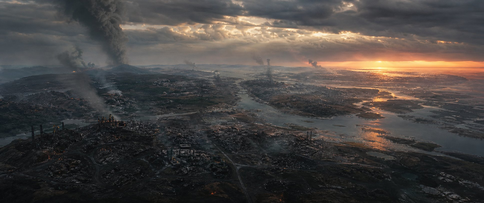
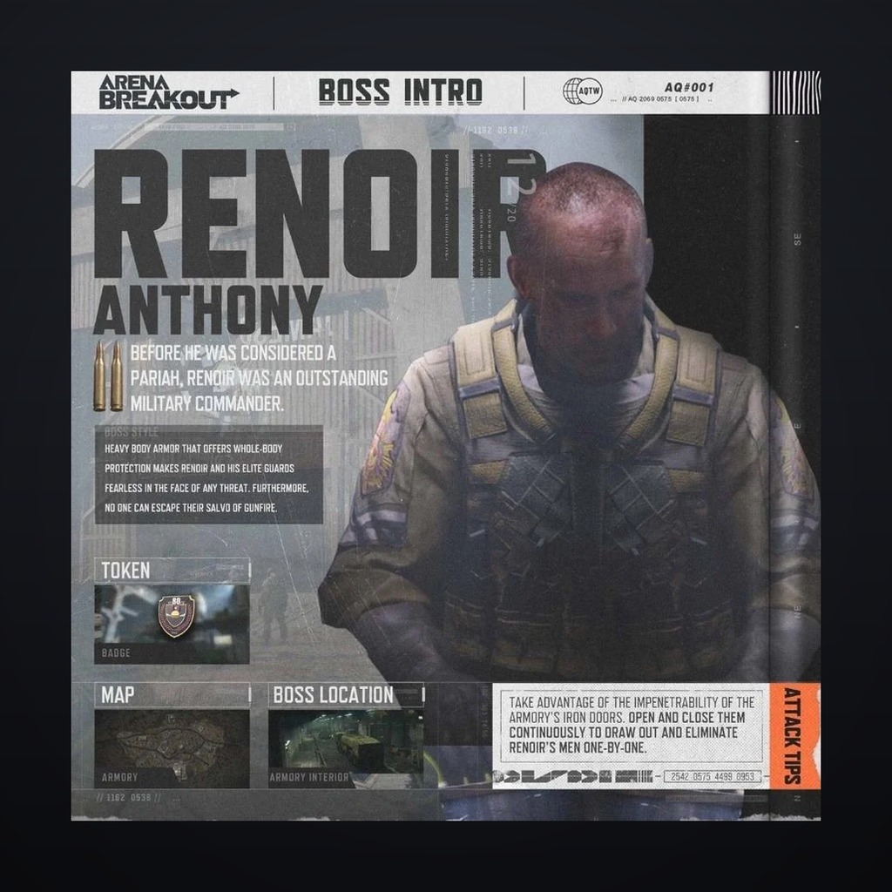
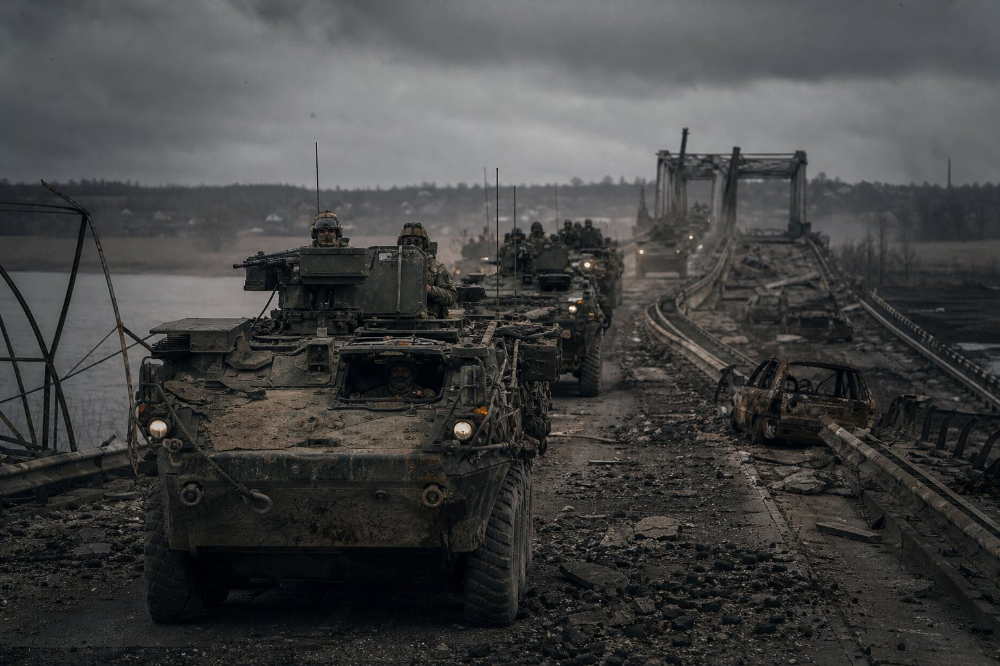
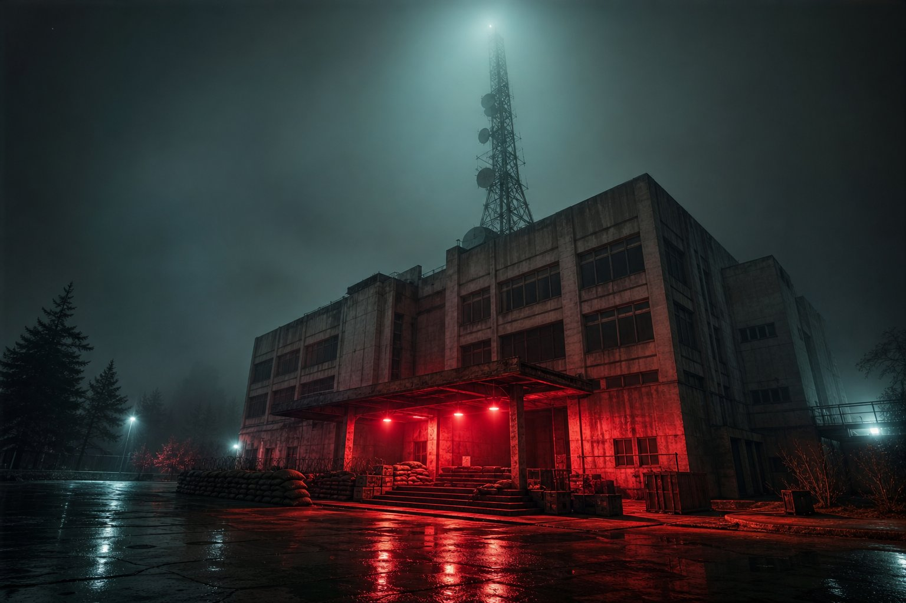
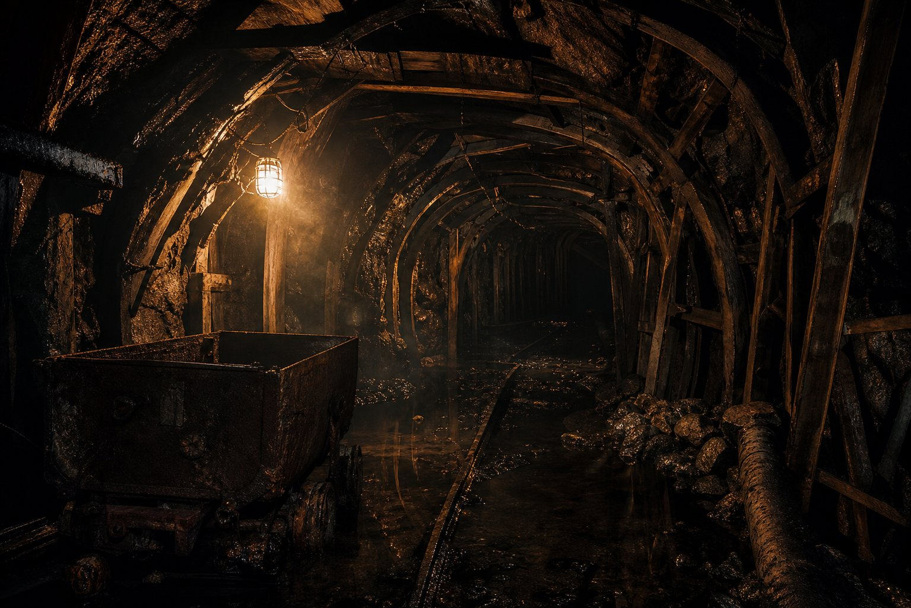
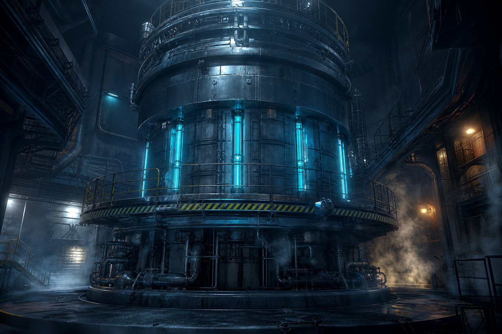

Visuel de référence

Operateur de Kamona
Portrait d'opérateur : le visuel de référence de l'univers de Kamona.
1. Kamona en bref
Kamona est l’état principal de la franchise Arena Breakout : un petit archipel autosuffisant, forme de nombreuses îles, dont l’immense majorité de la population vit sur la plus grande, qui donne son nom au pays. Communauté
Le territoire est géographiquement simple et stratégiquement riche : des collines roulantes dans le centre et l’ouest, des régions montagneuses et stériles à l’intérieur (la Mine, les Onotos Mines), des plaines agricoles dans la région de Marulos, des ports sur la côte, et une frontière montagneuse au nord où la neige bloque les dépôts. Le terrain n’est pas le sujet : ce qui compte, c’est que quelques sites concentrent à la fois la production, l’information et les routes logistiques. Rapporte
La langue officielle de Kamona semble être l’espagnol, d’après les dialogues de plusieurs PNJ, notamment des personnels militaires. Rapporte
Une chronologie datée, mais des dates flouées
Le jeu ne donne presque jamais de dates absolues. Les événements sont ordonnés de façon fiable (avant la guerre, pendant, après l’armistice), mais leur datation reste approchée. Toute chronologie de Kamona est donc une reconstruction : elle indique l’ordre, pas la date. Les saisons du jeu donnent des repères fiables : la Saison 1 IGNITION, la Saison 4 Airport Hunt, la Saison 5 Dusk to Dawn, la Saison 6 White Nights et la Saison 7 Utopia.
2. La géographie de l’archipel
Chaque lieu du lore correspond à une zone de jeu où à un site secondaire. C’est la règle la plus utile du lore : quand vous lisiez une histoire de Kamona, elle se passe presque toujours où vous êtes en train de looter.
| Lieu | Région | Rôle dans le lore | Zone de jeu |
|---|---|---|---|
| TV Station | Centre / hauteur | Complexe de diffusion fortifié, base des White Wolves, laboratoire secret à l’ascenseur du 2e étage, système d’inondation au gaz pour dénier l’accès au centre. Plus tard réquisitionne par le Comité Sumek. | TV Station |
| Marulos Armory | Nord | Dépôt militaire majeur du Nord, prise de guerre décisive. Arsenal de haut niveau au pouvoir de la Kamona Liberation Army. | Armory |
| Marulos Farms | Nord / plaines | Zone agricole disputée : Ajax Jones y défend l’Axe de ravitaillement contre les sous-traitants de Blackgold, puis contre l’Abyss Squad. | Farm |
| The Mine | Intérieur montagneux | Ancienne prison construite dans le complexe minier, bandits des Mad Dogs, puis lieu de l’écrasement de l’avion du Comité Sumek transportant des échantillons d’Utopia. | Mine / events |
| Kamona Port | Côte | Hub du marché noir et des réseaux d’échanges illicites ; port tenu par les mutins de Derwin Pan et Rodriquez. | Port / events |
| Guoyapos International Airport | Sud | Hub aviation modernisé en base de commandement provisoire des deux camps, puis militarisé. Base avancée de MNST après l’incident de la TV Station. | Airport |
| Northridge | Nord / altitude | Station de téléphérique, hôtel, station d’épuration. Position dominante,enneigée, terrain de l’affrontement Fred contre Obol et Viper. | Northridge |
| Valley / Norteno Court | Centre | Vallée rénovée en fort par la famille Antonio ; résidence de Doss Antonio et de son escorte. | Valley |
| Floranpino Valley | Centre | Zone de résidence de Doss Antonio, blanchiment d’armes sous la Villa. | Valley |
| Onotos Mines | Intérieur | Zone minière de réunions clandestines et de tentatives d’embuscade. | Events |
3. Avant la guerre : la fracture
Kamona n’a pas explosé d’un coup. La guerre Nord-Sud commence par une déclaration d’indépendance du Second Clan, un acte politique local. L’armée kamonaise se scinde : des officiers choisissent de partir avec leurs hommes plutôt que d’accepter la nouvelle ligne de commandement. Rapporte
- Benjamin Renoir Brady commande alors la 4e brigade d’infanterie blindée de l’armée kamonaise. Il part avec Ajax Jones et d’autres lorsque le Second Clan déclare son indépendance. Rapporte
- La Marine de la République du Nord de Kamona disposait de deux cuirassés. Après une série d’événements, l’armée du Nord, trop exposée, est désorientée : le commandement ordonne de couler un navire. Rapporte
- Le Polaris a refusé de couler. Son officier, Derwin Pan, tue ses supérieurs avec son pistolet F57, provoque une mutinerie, puis construit un réseau de marché noir avec un contact nommé Rodriquez. Rapporte
Le résultat de ces mutineries se lit dans le jeu : Derwin Pan est un boss de la zone portuaire, et son récit (RPK-16 à tambour de 95 rounds, F57 en arme secondaire) est celui d’un homme qui a gardé sa dignité d’officier. Rapporte
4. La guerre Nord-Sud
Le conflit oppose un Nord industriel et un Sud riche en ressources. Il ne s’agit pas d’une guerre idéologique : c’est une guerre par procuration, où deux puissances étrangères se combattent sur le territoire kamonais en utilisant les forces locales comme des mandataires. Communauté

| Camp | Force locale | Parrain étranger | Unité d’élite | Positions clés |
|---|---|---|---|---|
| Nord | Front du Nord / MNST | Tevilla | White Wolves Squad | TV Station, Marulos Armory, ports |
| Sud | Armée du Sud / CDIS | Colom | Alpha Team (Colom SAS) | TV Station, Marulos Farms, ports |
| Tiers | Kamona Liberation Army | Tevilla + White Wolves | Renoir Brady, Ajax Jones | Marulos Armory, Marulos Farms |
| Neutre | Comité Sumek | International | Alpha + Bravo | TV Station (après l’armistice) |
4.1 Les batailles qui comptent

- La prise de la TV Station. Les forces du Nord, avec les White Wolves, s’emparent de la station et la transforment en base fortifiée : système d’inondation au gaz pour dénier l’accès à la zone centrale, et laboratoire secret accessible par un ascenseur spécial au deuxième étage. Communauté
- Les ports et les disques. Aux ports, White Wolves et opérateurs Blackgold se disputent le contrôle d’informations sensibles, notamment des disquettes contenant des données capitales. Communauté
- Marulos Armory. La prise du dépôt par la Kamona Liberation Army crée un troisième pôle que ni le Nord ni le Sud ne peut neutraliser facilement. Ajax Jones défend ensuite Marulos Farms contre les contre-attaques méridionales. Communauté
- La percée d’Hecate. L’Abyss Squad franchit la ligne d’armistice à Marulos Farms, force Ajax Jones à se replier et obtient un contrôle temporaire avant que la Libération Army ne reprenne la position. Communauté
4.2 Les trois rebellions internes
La guerre Nord-Sud est le décor. Le vrai sujet, ce sont les cinq ou six conflits locaux qui se superposent et que le jeu met en jeu sous forme de boss. Communauté
Kamona Liberation Army
Renoir Brady & Ajax Jones
Former officiers de l’armée kamonaise, ils fondent l’Arme de la Libération de Kamona après la déclaration d’indépendance du Second Clan. Leur coup d’éclat est la prise de l’Armory de Marulos.
- Base : Marulos Armory et Marulos Farms
- Position : alliés du Nord, mais indépendant
- Conflit interne : Ajax sur le terrain, Renoir au bunker
Les mutins du Polaris
Derwin Pan & Rodriquez
Refus de couler le Polaris, mutinerie, liquidation de la chaîne de commandement, puis constitution d’un réseau de marché noir dans un port. Pan reste un officier de marine : son équipement de boss conserve un grade militaire.
- Base : la zone portuaire
- Méthode : corruption plutôt que violence de front
- Token de boss : la ceinture tranchée
Les Mad Dogs
Stephen & Porrero Kazan
Banditisme organisé dans les prisons de la Mine. Pendant la guerre, le gang de Stephen organisé une émeute réussie contre le gardien et les gardes, avec l’aide de Porrero Kazan. Interne, la bande se retourne : Porrero tente d’assassiner Stephen pour insubordination, est déposé et abandonné dans la mine, puis récupéré par les White Wolves.
- Base : la Mine et le Valley
- Porrero devient sbire de Doss Antonio
- Token de boss : la clé de la prison de la Mine
La famille Antonio
Doss Antonio & Porrero
Organisation criminelle qui prospère dans l’anarchie de l’après-guerre. Doss Antonio transforme sa richesse en pouvoir : il embauche des sbires (dont Porrero Kazan), fait appel aux White Wolves pour du soutien et finance la construction du Norteno Court et la rénovation de bâtiments de la vallée.
- Base : la Villa, Floranpino Valley
- Code visuel : or, lunettes de soleil, costume
- Token de boss : la pièce d’or faite main
5. Sumek : la fin officielle de la guerre
Le Comité Sumek est une organisation internationale neutre. Il intervient dans la guerre Nord-Sud et médiatise publiquement la fin des hostilités ouvertes entre le Nord et le Sud. L’armistice est réel sur le papier : les deux camps acceptent de cesser les combats de front. Communauté
Mais la guerre ne s’arrête pas. Elle change simplement de forme : elle devient une guerre larvée dans la zone qui sera appelée la Dark Zone, une immense région sans loi où subsistent escarmouches, trahisons et courses aux ressources. C’est précisément cette persistance qui attire les PMC et les acteurs économiques : c’est là que se joue votre vie, et vos Koen. Communauté
Pourquoi c’est important pour vous
Toute la boucle de jeu d’ABI est une paraphrase du lore : une zone de conflit déclarée mais non résolue, des acteurs multiples aux intentions incompatibles, et un prix pour ceux qui restent. La Dark Zone n’est pas une métaphore du PvP, c’est le lieu où la métaphore a été réalisée.
Le Comité ne se limite pas à la médiation : après l’incident de l’avion, il réquisitionne la TV Station pour des raisons non déclarées. C’est le dernier geste documenté du Comité dans le lore public. Communauté
6. Operation Peacemaker et Operation Blackout
Pour protéger ses vols d’aide humanitaire des batteries antiaériennes restantes, le Comité Sumek lance l’opération Peacemaker. Son volet le plus documenté est l’opération Blackout. Communauté
- Deux équipes mixtes sont déployées sur l’Armory de Marulos Nord : l’Alpha Team (spécialistes aéronautiques de Colom) et la Bravo Team (membres de l’Abyss Squad de Blackgold Universal).
- La mission : neutraliser les batteries antiaériennes et enquêter sur des systèmes supplémentaires.
- Juste avant l’extraction, la Bravo Team trahit l’Alpha Team et redirige la dernière batterie vers l’avion d’aide humanitaire du Comité qui survole le site.
- L’avion ne transportait pas de l’aide : il transportait des échantillons d’Utopia. Il s’écrase dans la zone de la Mine, dispersant un matériel de valeur devenu l’objectif de toutes les parties.
- Colom et Tevilla offrent ensuite des sommes considérables pour récupérer ces échantillons. Alpha n’ayant pas réussi à s’extraire, la suspicion du Comité ne peut pas se fixer sur le Sud : Renoir Brady est accusé, et sa réputation est abîmée.

C’est le seul événement où une action collective documentée explique à la fois Utopia, la Mine, la réputation de Renoir et la suspicion internationale. Si vous ne deviez retenir qu’un épisode du lore, c’est celui-là. Communauté
7. Naissance de la Dark Zone
La Dark Zone est le nom donné au territoire où le conflit se poursuit après l’armistice. Ses caractéristiques, confirmées par la communauté :
- Zone sans loi. Aucune autorité Kamonaise n’y est présente de façon effective.
- Conflit de basse intensité permanent. Escarmouches, trahisons, récupérations de ressources, cellules de réseau.
- Arena des PMC. Les entreprises militarisées privées y font leurs affaires, à travers des contrats à risque et à forte récompense.
- Zone d’enjeu. Les sites historiques (TV Station, Armory, Mine, Port, Northridge, Guoyapos) y sont là où se concentrent les régressions.
Le jeu traduit cela par une règle simple, répétée dans les textes de mission in-game : « seul ce que vous sortez de la Dark Zone vous appartient ». Officiel
Le détail est lu pour un joueur : la sécurité est proportionnelle au capital transporté. Un pauvre en loot est un joueur que personne ne tuerait pour rien. Officiel
Voir la page dédiée : La Dark Zone — modes, sites et implications pratiques.
8. Utopia : l’origine du mystère de la Saison 7
La Saison 7 Utopia est le premier moment où le jeu relie explicitement la Saison 7 à l’histoire de Kamona. L’annonce officielle est claire sur un point et volontairement muet sur tout le reste. Officiel
Le studio a explicitement indiqué que ni l’origine du réactif, ni sa fonction, ni le responsable de la perte de contrôle n’étaient expliqués. Officiel Les zones infectées apparaissent sur Farm, Valley et Airport, et le matériel de développement relie l’épisode aux installations situés sous la TV Station. Officiel

Un second loot rouge fait de poids égal à Utopia, Elysium, est disponible en S7 dans les zones infectées, avec une garantie via la ligne de mission zombie. Officiel Cela suggère que le réactif d’Utopia n’est pas un objet unique, mais une classe de matériel bio-technologique déjà largement diffusée avant la fuite. Théorie
9. Chronologie de Kamona
Avant la guerre
Déclaration d’indépendance du Second Clan
Renoir Brady quitte l’armée avec Ajax Jones. Derwin Pan a refusé de couler le Polaris et mute. Les Mad Dogs s’organisent dans les prisons de la Mine. Rapporte
Pendant la guerre
Prise de la TV Station et de l’Armory de Marulos
Les White Wolves fortifient la TV Station (inondation au gaz, laboratoire secret). La Kamona Liberation Army s’empare de l’Armory, crée un troisième pôle. Les ports deviennent le théâtre d’affrontements pour des disquettes de données. Communauté
Operation Peacemaker / Blackout
La trahison de la Bravo Team
La batterie antiaérienne est redirigée sur l’avion du Comité Sumek, qui transportait des échantillons d’Utopia. Crash dans la Mine. Renoir Brady est accusé ; sa réputation est abîmée. Communauté
Armistice
Le Comité Sumek médie la fin des hostilités
Fin publique de la guerre Nord-Sud. Le Comité réquisitionne ensuite la TV Station pour des raisons non déclarées. Communauté
Après l’armistice
La guerre larvée
Apparition de la Dark Zone. Les PMC s’installent. Doss Antonio bâtit le Norteno Court, la famille Antonio et les Mad Dogs se structurent, Derwin Pan contrôle un port. Communauté
Incident de la TV Station
EDELWEISS rappelée
EDELWEISS est rappelée pour reprendre le commandement de la TV Station et gérer les conséquences. MNST lui ordonne ensuite de sécuriser l’aéroport de Guoyapos comme base avancée : au cours du repérage, l’escouade des White Wolves est embusquée par la Blackgold Squad. Officiel
Saison 7 — 16 septembre 2026
La fuite d’Utopia
Le réactif Utopia s’échappe et provoque une crise à l’échelle de Kamona. Apparition des infectés sur Farm, Valley et Airport, du mode Zombie Endless et du loot rouge Elysium. Officiel
10. Les mystères non résolus
Le lore de Kamona est délibérément fragmentaire. Les trous ne sont pas des oublis de la communauté : ce sont des véritables zones d’ombre, que le studio remplit progressivement. Officiel
Qui a fabrique Utopia, et pour quoi ?
Ni l’origine, ni la fonction, ni le responsable ne sont donnés par MoreFun. L’hypothèse dominante est qu’Utopia était un programme de recherche militaire ou industriel, déjà conduit avant la guerre. Théorie
Qu’était le projet Gungnir ?
Un programme de type « armée stratégique » est cité par la communauté qui aurait incubé sous la TV Station. Aucun document officiel du Comité Sumek ne le mentionne pas dans les sources recoupées. Théorie
Qu’est-ce que l’Apostle ?
Les Archives du Kamona Investigation Bureau publient un dossier intitulé « Apostle », qui révèle un contexte historique et des dynamiques clandestines. Le contenu exact du dossier n’est pas documenté par une source tierce. Rapporte
Le réseau Toland
Une corporation transnationale pharma-défense, présent dans les théories communautaires comme le commanditaire possible du laboratoire sous la TV Station. Aucune mention officielle confirmée dans les notes de patch. Théorie
Le Secret Document
Un document confidentiel rouge, dont la circulation en raid alimente les théories. Sa nature exacte et sa valeur de monétisation restent non confirmées par l’éditeur. Théorie
La voix inconnue de la radio
Pendant l’affrontement de Hecate à Marulos Farms, une voix anonyme la contacte par radio et lui dit de ne pas partir — « le camp de garde vous traitera bien ». L’identité de l’interlocuteur n’a jamais été révélée. Rapporte
Le sort de Doctor Mihalio
Le scientifique qui intéressait toutes les factions a été évacué par Blackgold sous escorte, ambuscade par les White Wolves, puis déplacé aux Marulos Farms, avant de tomber sous contrôle de sous-traitants. Sa localité de recherche exacte et sa destination finale restent inconnues. Communauté
11. Ce que le lore change en jeu
Le lore n’est pas décoratif : il prédit la densité de danger et la densité de loot. Voici la traduction opérationnelle. Communauté
| Signal du lore | Lecture en jeu | Action concrète |
|---|---|---|
| Un site est un nœud stratégique (TV Station, Armory, Mine, Airport) | Compensation élevée, contesté, boss | Équipe complète, munitions de pénétration, budget élevé |
| Un site est un lieu de marché noir (Port, Valley, Norteno Court) | Objets de valeur, coffres, mais peu de munitions | Budget moyen, prioriser l’extracteur et les coffres |
| Un boss de faction apparaît | Sa faction contrôle la zone ce jour-là | Éviter l’axe du boss ; opportunité de farm de tokens |
| Les renseignements (disquettes, archives) | valeur narrative et officielle | Ne pas sacrifier une extraction pour un objet de récit |
| Une zone infectée (S7) | Bonus de risque + bonus de loot rouge | Combiner masque, sprint court, Elysium en priorité |
La règle qui résume tout
Un site à fort enjeu narratif est presque toujours un site à fort enjeu financier, et un site à fort enjeu financier est presque toujours un site ou l’on meurt. Le lore vous donne la carte ; l’équipement décide de l’issue.
12. Sources
Officiel
- Annonce de la Saison 7 : Utopia — MoreFun Studios / idcgames. Lancement le 16 septembre 2026, fuite du réactif Utopia, origine et responsable non expliqués. idcgames.com (nouvel onglet)
- Notes de mise à jour S1 à S7 — Steam / site officiel. Textes de mission « Dusk to Dawn », « A Debt Unpaid », « Abundant Profit », « Smooth Extraction », « Sanctuary Recon », « Signal Interference », « Send Signal ». steamcommunity.com (nouvel onglet)
- S7 UTOPIA Arrives with Massive Rewards — MoreFun Studios, 15 septembre 2026 : Elysium comme loot rouge de valeur égale à Utopia, limite de la Collection Room. senseos.gg (nouvel onglet)
- Story of Kamona — série officielle YouTube : First Season Documentary, EP.03 Red Smoke, EP.04 The Key, EP.05 RAT, EP.06 Dogtag, plus No Man’s Land et A Golden Opportunity. youtube.com/@ArenaBreakoutInfinite (nouvel onglet)
- Kamona Investigation Bureau Archives ① et ② — publications officielles (X, Facebook, Instagram) : origines de la Dark Zone, causes de la guerre, dossier « Apostle ».
- Official Kamona Investigation Mission Overview — trailer officiel de mission narrative : le joueur est un enquêteur qui récupère des documents confidentiels dans des sites abandonnés.
- Description officielle Arena Breakout (2022) — définitions de Tac Ops (Agents) et Covert Ops (Rogues) et des « Dark Zone Pioneers ». arenabreakout.com (nouvel onglet)
Communautaire
- Arena Breakout Wiki (Fandom) — page Kamona : chronologie de la guerre, alliances, sites, personnages. arena-breakout.fandom.com (nouvel onglet)
- Grokipedia — Kamona — synthèse secondaire recoupant factions, chronologie et rôle des PMC ; source la plus dense pour l’Operation Blackout. grokipedia.com (nouvel onglet)
- NamuWiki — Arena Breakout / Boss — fiches de boss, affiliations, armes et tokens. en.namu.wiki (nouvel onglet)
- Reddit r/ArenaBreakoutInfinite et r/ArenaBreakoutGlobal — fils « Does anyone know who all the factions are », « ABI / White Nights lore », archives du Bureau, analyses du Secret Document.
- senseos.gg — registre des boss, guide des loot rouges et de l’event S7. senseos.gg (nouvel onglet)
Théories (non confirmées)
- Corporation Toland, « l’Ark » sous la TV Station, projet Gungnir, projet Apostle, agents d’élimination « Cleaners » et la figure « Arachne » : recoupées par des posts Reddit et un site générateur automatique, sans confirmation officielle.
- Les archives du Bureau no 2 selon un post Reddit : CDIS aurait possédé la Valley et Northridge avant que MNST ne les reprenne. Information issue d’un post communautaire, à confirmer auprès de la source primaire.
- Confusion courante entre les White Wolves (faction lore, parrainée par Tevilla) et la Saison 6 White Nights (nom de saison officiel). Deux entités sans rapport.